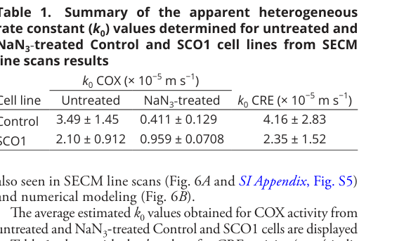

Cytochrome c Oxidase Deficiency (Complex IV Deficiency): Disease Characteristics Research Report
Target disease: Cytochrome c oxidase deficiency (COX deficiency; mitochondrial respiratory-chain complex IV deficiency)
Executive summary (current understanding)
Inherited cytochrome c oxidase (COX; mitochondrial complex IV) deficiency refers to primary mitochondrial disease caused by impaired assembly, maturation, or function of the terminal respiratory-chain enzyme that transfers electrons from cytochrome c to oxygen. It is a genetically and phenotypically heterogeneous set of disorders that commonly presents with high-energy–demand organ involvement (brain, skeletal muscle, heart, liver) and is a frequent biochemical cause of Leigh syndrome spectrum and mitochondrial myopathies. Recent work (2023–2024) has expanded the phenotypic spectrum for specific genes (e.g., COA8, COX18, SCO1) and introduced new/less invasive functional diagnostics (single-cell quantification of COX activity in living fibroblasts using scanning electrochemical microscopy). (rimoldi2023prominentmuscleinvolvement pages 1-3, ronchi2023abiallelicvariant pages 1-2, barbato2024endocrinologicalfeaturesand pages 1-2, thind2024cytochromecoxidase pages 1-2)
1. Disease information
1.1 Concise overview
- Definition (biochemical): an isolated reduction in complex IV/COX activity and/or defective assembly of the COX holocomplex, often confirmed by muscle histochemistry and spectrophotometric enzymology, and increasingly by cellular assays and proteomic “complexome” profiling. (ronchi2023abiallelicvariant pages 1-2, rimoldi2023prominentmuscleinvolvement pages 4-5, tang2025coa5hasan pages 6-8)
- Clinical framing: COX deficiency is a major cause of early-onset mitochondrial encephalomyopathy/Leigh syndrome spectrum, but can also present later with predominant myopathy or mixed neuro-myopathic disease depending on genotype. (kistol2023leighsyndromespectrum pages 1-2, rimoldi2023prominentmuscleinvolvement pages 1-3)
1.2 Synonyms / alternative names
- “Mitochondrial complex IV deficiency”
- “Isolated complex IV deficiency”
- “Cytochrome c oxidase (COX) deficiency” (rimoldi2023prominentmuscleinvolvement pages 1-3, ronchi2023abiallelicvariant pages 1-2)
1.3 Key identifiers (OMIM/Orphanet/ICD/MeSH/MONDO)
The current evidence package retrieved here did not include authoritative ontology identifier mappings (OMIM/Orphanet/ICD/MeSH/MONDO). Where possible, this report instead cites gene-specific disease entities referenced in primary literature (e.g., “mitochondrial complex IV deficiency, nuclear type 4” for SCO1) and advises adding identifier mappings from OMIM/Orphanet/MONDO during curation. (barbato2024endocrinologicalfeaturesand pages 1-2)
1.4 Evidence sources (individual vs aggregated)
- Aggregated cohorts: national/center cohorts of Leigh syndrome spectrum with gene-frequency estimates. (kistol2023leighsyndromespectrum pages 1-2)
- Individual patients/case series: gene-specific reports (e.g., COX18, COA8, SCO1). (rimoldi2023prominentmuscleinvolvement pages 1-3, ronchi2023abiallelicvariant pages 1-2, barbato2024endocrinologicalfeaturesand pages 1-2)
- Mechanistic synthesis reviews: assembly pathways and model systems (yeast) for variant interpretation. (guaragnella2024morethanjust pages 4-5)
2. Etiology
2.1 Primary causal factors
Genetic causes dominate: pathogenic variants in (i) mtDNA-encoded COX core subunits (not captured in the retrieved excerpts) and (ii) nuclear genes encoding COX subunits, COX assembly factors, heme A biosynthesis enzymes, and copper delivery/metallochaperone machinery. (guaragnella2024morethanjust pages 4-5, guaragnella2024morethanjust pages 13-14)
Representative nuclear-gene examples with 2023–2024 primary evidence include: - COA8 biallelic loss-of-function (frameshift) causing isolated COX deficiency with expanded myopathic phenotype. (rimoldi2023prominentmuscleinvolvement pages 1-3) - COX18 biallelic missense causing neonatal encephalo-cardio-myopathy and axonal sensory neuropathy with profound COX deficiency. (ronchi2023abiallelicvariant pages 1-2) - SCO1 (copper-handling/assembly) causing COX deficiency (MC4DN4), with newly reported endocrine/DEE features. (barbato2024endocrinologicalfeaturesand pages 1-2) - SURF1 as a common cause of COX-deficient Leigh syndrome in cohorts (founder effects in some populations). (kistol2023leighsyndromespectrum pages 1-2)
2.2 Risk factors
- Genetic: family history, consanguinity in autosomal recessive nuclear forms; population-specific founder variants (example below for SURF1). (kistol2023leighsyndromespectrum pages 1-2)
- Environmental/lifestyle: no validated environmental “risk factors” for disease onset analogous to common complex disease were identified in the retrieved evidence; however, metabolic stressors may precipitate “crises” in Leigh spectrum disorders (general framework). (baldo2024acomprehensiveapproach pages 1-2)
2.3 Protective factors
No protective genetic variants or environmental protective factors were identified in the retrieved evidence.
2.4 Gene–environment interactions
Not specifically addressed in the retrieved evidence for COX deficiency.
3. Phenotypes (with ontology term suggestions)
3.1 Core phenotype domains
1) Leigh syndrome spectrum (LSS) - Typical infancy onset and progressive neurodegeneration with characteristic MRI lesions; in a 219-patient Russian cohort, Leigh syndrome is described as typically presenting in infancy with progressive course and bilateral symmetric MRI changes, and SURF1 was the leading gene (see epidemiology below). (kistol2023leighsyndromespectrum pages 1-2) - HPO suggestions: - Leigh syndrome phenotype: HP:0002540 (Leigh syndrome) - Developmental regression HP:0002376 - Lactic acidosis HP:0003128 - Basal ganglia lesions (for Leigh) HP:0002134
2) Cardioencephalomyopathy / cardiomyopathy - COX18 case: neonatal hypertrophic cardiomyopathy with encephalo-cardio-myopathy and neuropathy. (ronchi2023abiallelicvariant pages 1-2) - Copper-assembly gene phenotypes (reviewed): SCO1/SCO2 mutations associated with infantile cardioencephalomyopathy and death in infancy in some genotypes. (garza2023mitochondrialcopperin pages 13-15) - HPO suggestions: Hypertrophic cardiomyopathy HP:0001639, Encephalopathy HP:0001298, Hypotonia HP:0001252
3) Myopathy-dominant phenotypes - COA8 familial report: prominent exercise intolerance/myalgia/cramps, ptosis, neuropathy; muscle biopsy showed ragged-red fibers and diffuse COX deficiency. The abstract states: “Isolated mitochondrial respiratory chain Complex IV (Cytochrome c Oxidase or COX) deficiency is the second most frequent isolated respiratory chain defect.” (Frontiers in Genetics; Nov 2023; https://doi.org/10.3389/fgene.2023.1278572). (rimoldi2023prominentmuscleinvolvement pages 1-3, rimoldi2023prominentmuscleinvolvement pages 4-5) - HPO suggestions: Exercise intolerance HP:0003546, Myalgia HP:0003326, Ptosis HP:0000508, Peripheral neuropathy HP:0009830, Ragged-red fibers HP:0003200
4) Cavitating leukoencephalopathy / leukodystrophy patterns - COA8-related disease has been linked to cavitating leukoencephalopathy with a biphasic course (acute regression followed by stabilization/slow improvement), with neuropathology described in a 2023 case report. (rimoldi2023prominentmuscleinvolvement pages 1-3) - HPO suggestions: Leukodystrophy HP:0002415, Cavitating leukoencephalopathy HP:0033734 (if available in local HPO version), White matter abnormalities HP:0002180
5) Endocrine/epileptic encephalopathy expansion (SCO1/MC4DN4) - 2024 case series: three patients with SCO1-related COX deficiency show developmental and epileptic encephalopathy (DEE) and progressive hypopituitarism (notably growth hormone and thyroid axis), expanding previously reported MC4DN4 phenotypes. (Endocrine Connections; Aug 2024; https://doi.org/10.1530/ec-24-0221). (barbato2024endocrinologicalfeaturesand pages 1-2) - HPO suggestions: Seizures HP:0001250, Epileptic encephalopathy HP:0200134, Hypopituitarism HP:0000824, Growth hormone deficiency HP:0000839, Hypothyroidism HP:0000821
3.2 Quality-of-life impact
Direct QOL instrument data (e.g., SF-36/EQ-5D) were not present in retrieved evidence. However, diagnostic delays and invasive testing are highlighted as burdens, and early diagnosis is described as improving management and QOL in infants (see diagnostics). (thind2024cytochromecoxidase pages 1-2)
4. Genetic / molecular information
4.1 Causal gene landscape (selected, evidence-backed)
A curated gene list and mapping to assembly pathways, copper delivery, and heme A synthesis is provided in the artifact table below.
Table (click to expand)
| Gene / factor | Functional role in complex IV biogenesis | Typical clinical presentation(s) mentioned in available evidence | Inheritance / notes | Key citations |
|---|---|---|---|---|
| SURF1 | Assembly factor; proposed heme A transfer/chaperoning to apoCOX1; a common cause of COX-specific Leigh syndrome | Classical Leigh syndrome / Leigh spectrum; early infantile neurodegeneration; often complex IV deficiency; hypertrichosis reported in SURF1-associated Leigh syndrome in one cohort | Nuclear gene; inherited forms of COX deficiency are typically AR when due to nuclear assembly genes; strong founder effect for c.845_846delCT in Russian cohort | (guaragnella2024morethanjust pages 8-9, kistol2023leighsyndromespectrum pages 1-2, guaragnella2024morethanjust pages 7-8) |
| SCO1 | Copper-delivery / CuA-site assembly factor for COX2; contains copper-binding motif; part of metallochaperone pathway with COX17/SCO2/COA6 | Historically severe infantile encephalopathy, hepatopathy, lactic acidosis, cardiomyopathy; expanded 2024 phenotype includes developmental and epileptic encephalopathy with progressive hypopituitarism | Nuclear gene; MC4DN4 due to SCO1 variants; reported as autosomal recessive COX deficiency subtype | (garza2023mitochondrialcopperin pages 3-4, garza2023mitochondrialcopperin pages 13-15, barbato2024endocrinologicalfeaturesand pages 1-2, guaragnella2024morethanjust pages 13-14) |
| SCO2 | Copper delivery and disulfide-exchange in CuA-site assembly on COX2; works with COX17/SCO1/COA6 | Fatal infantile cardioencephalomyopathy, hypertrophic cardiomyopathy, hypotonia; can resemble spinal muscular atrophy or axonal neuropathy/CMT; variable severity | Nuclear gene; commonly AR; E140K highlighted as recurrent/common pathogenic allele | (garza2023mitochondrialcopperin pages 3-4, guaragnella2024morethanjust pages 14-16, garza2023mitochondrialcopperin pages 13-15, guaragnella2024morethanjust pages 13-14) |
| COX10 | Heme O synthase in heme A biosynthesis (heme B → heme O); required upstream of COX1 hemylation | Isolated COX deficiency, Leigh syndrome, cardiomyopathy; included among LS genes detected in 2023 cohort | Nuclear gene; AR disease mechanism typical for nuclear COX assembly defects | (guaragnella2024morethanjust pages 7-8, guaragnella2024morethanjust pages 4-5, kistol2023leighsyndromespectrum pages 1-2) |
| COX15 | Heme A synthase (heme O → heme A); oligomerization/function linked to PET117 and SURF1-dependent assembly steps | Isolated COX deficiency, Leigh syndrome, cardiomyopathy, anemia, sensorineural hearing loss | Nuclear gene; AR disease mechanism typical | (guaragnella2024morethanjust pages 7-8, guaragnella2024morethanjust pages 4-5) |
| COA6 | Accessory copper-handling / thiol-reductase factor for CuA metalation; interacts with SCO proteins and COX2 | Evidence supports COX deficiency with impaired respiration; copper supplementation rescues yeast/model defects; specific human phenotypes not detailed in retrieved excerpts | Nuclear gene; assembly-factor defect | (guaragnella2024morethanjust pages 14-16, guaragnella2024morethanjust pages 4-5) |
| COA8 | COX assembly/stability factor (loss-of-function causes isolated complex IV deficiency) | Classically cavitating leukoencephalopathy with biphasic course (acute regression then stabilization/improvement); newer familial report expands to prominent myopathy, ptosis, hearing loss, neuropathy, cognitive issues | Nuclear gene; biallelic loss-of-function reported | (rimoldi2023prominentmuscleinvolvement pages 1-3) |
| COX18 | Required for MT-CO2/COX2 maturation and complex IV assembly | Neonatal encephalo-cardio-myopathy with hypertrophic cardiomyopathy, infantile myopathy, and axonal sensory neuropathy | Nuclear gene; biallelic pathogenic variant reported in 2023 case | (ronchi2023abiallelicvariant pages 1-2) |
| COX17 | Copper metallochaperone upstream of SCO1/SCO2/COX11; hands copper to CuA/CuB assembly pathway | No specific standalone phenotype detailed in retrieved excerpts; implicated as candidate/established copper-delivery factor in inherited COX deficiency pathway | Nuclear gene / pathway factor | (garza2023mitochondrialcopperin pages 3-4, guaragnella2024morethanjust pages 4-5, guaragnella2024morethanjust pages 13-14) |
| COX11 | Copper delivery to COX1 CuB site | COX11 mutations noted in recent literature reviewed; specific phenotype details not expanded in retrieved excerpts | Nuclear gene / pathway factor | (guaragnella2024morethanjust pages 8-9, guaragnella2024morethanjust pages 4-5) |
| COX19 | Copper-handling / assembly accessory factor in COX biogenesis | Specific phenotype not detailed in retrieved excerpts; highlighted as part of copper-delivery/assembly network and candidate in unexplained COX deficiency | Nuclear gene / pathway factor | (guaragnella2024morethanjust pages 8-9, guaragnella2024morethanjust pages 21-22) |
| PET100 | Assembly factor associated with specific COX subassembly complexes | Complex IV deficiency; specific phenotype not detailed in retrieved excerpts | Nuclear gene; assembly-factor defect | (guaragnella2024morethanjust pages 13-14) |
| PET117 | Assembly factor linking COX15 oligomerization/heme A biosynthesis to COX assembly; also supports COX1 synthesis regulation | Isolated COX deficiency reported in affected siblings; broader phenotype details not expanded in retrieved excerpts | Nuclear gene; assembly-factor defect | (guaragnella2024morethanjust pages 8-9, guaragnella2024morethanjust pages 7-8) |
| LRPPRC | Stabilizes mitochondrial mRNA and supports early COX1 module / mitochondrial translation | French-Canadian Leigh syndrome (LSFC) with complex IV involvement | Nuclear gene; founder disease in Quebec population noted in broader literature, though not quantified in retrieved excerpts | (guaragnella2024morethanjust pages 4-5, baldo2024acomprehensiveapproach pages 1-2) |
| NDUFA4 | Structural subunit associated with complex IV function | Leigh syndrome with psychomotor delay, white matter/brainstem changes, lactic and phytanic acidosis in reported child with biallelic deletion | Nuclear gene; ultra-rare cause of mitochondrial complex IV deficiency nuclear type 21 | (kistol2023leighsyndromespectrum pages 1-2) |
Table: This table summarizes key genes and assembly pathways implicated in inherited cytochrome c oxidase deficiency using only the retrieved evidence. It highlights how defects in heme A synthesis, copper delivery, and COX1/COX2 assembly map to characteristic phenotypes such as Leigh syndrome, cardioencephalomyopathy, cavitating leukoencephalopathy, and myopathy.
4.2 Pathogenic variant types (examples with 2023–2024 evidence)
- Frameshift duplication: COA8 c.170_173dupGACC, p.(Pro59fs) (homozygous) in familial mitochondrial myopathy with COX deficiency. (rimoldi2023prominentmuscleinvolvement pages 1-3)
- Missense: COX18 c.667G>C (p.Asp223His) (homozygous) associated with neonatal encephalo-cardio-myopathy and neuropathy. (ronchi2023abiallelicvariant pages 1-2)
- Large deletion/CNV: homozygous 12.9 kb deletion overlapping NDUFA4 causing complex IV deficiency/Leigh phenotype (reported 2024). (kistol2023leighsyndromespectrum pages 1-2)
4.3 Inheritance patterns
- Nuclear gene causes are predominantly autosomal recessive (biallelic loss-of-function or hypomorphic alleles) in the evidence retrieved (COA8, COX18, SCO1). (rimoldi2023prominentmuscleinvolvement pages 1-3, ronchi2023abiallelicvariant pages 1-2, barbato2024endocrinologicalfeaturesand pages 1-2)
- Leigh syndrome spectrum more broadly includes mtDNA and nDNA inheritance modes (maternal, AR/AD, X-linked), per diagnostic review. (baldo2024acomprehensiveapproach pages 1-2)
4.4 Modifier genes / epigenetics
No specific modifier genes or epigenetic disease mechanisms were identified in the retrieved evidence package.
5. Environmental information
No disease-specific environmental toxins, lifestyle factors, or infectious triggers were identified as causal contributors in the retrieved evidence.
6. Mechanism / pathophysiology
6.1 Causal chain (high-level)
Pathogenic variants → impaired COX assembly/cofactor insertion (heme A; copper centers) → reduced electron transfer to oxygen and reduced proton pumping → ATP deficiency and redox imbalance → vulnerability of high-energy tissues (CNS, muscle, heart, liver) → neurologic regression/encephalopathy, myopathy, cardiomyopathy, metabolic decompensation. (guaragnella2024morethanjust pages 4-5, garza2023mitochondrialcopperin pages 3-4, ronchi2023abiallelicvariant pages 1-2)
6.2 Key molecular pathways
1) Heme A biosynthesis and insertion (COX10/COX15/SURF1/PET117) - COX10 converts heme B → heme O, and COX15 converts heme O → heme A; PET117 and SURF1 are implicated in coupling COX15 function/oligomerization and heme A delivery/hemylation of COX1. (guaragnella2024morethanjust pages 4-5, guaragnella2024morethanjust pages 7-8)
2) Copper delivery to CuA (COX2) and CuB (COX1) centers - Mitochondria store a ligand-bound copper pool (~“30–50 ng/mg protein”), and about “~25%” of this pool is used by cytochrome c oxidase, which contains CuA (COX2) and CuB (COX1) sites; copper transfer proceeds via metallochaperones including COX17 → SCO1/SCO2/COX11 and accessory proteins (e.g., COA6). (garza2023mitochondrialcopperin pages 3-4)
3) Assembly modules and translational coupling - COX1 module formation and translation are coupled to assembly (e.g., LRPPRC stabilizing COX1 mRNA in the COX1 module; MITRAC components such as COX14/COA3 regulating COX1). (guaragnella2024morethanjust pages 4-5, guaragnella2024morethanjust pages 7-8)
6.3 Suggested ontology terms
- GO biological process (examples):
- Mitochondrial electron transport, cytochrome c to oxygen GO:0006123
- Respiratory electron transport chain GO:0022904
- Cytochrome c oxidase assembly GO:0017004
- Heme A biosynthetic process GO:0006785 (if curated), or heme biosynthetic process GO:0006783
- Copper ion transport / homeostasis GO:0006825
- GO cellular component: mitochondrial inner membrane GO:0005743; respiratory chain complex IV GO:0005751
- Cell Ontology (CL) candidates: skeletal muscle cell CL:0000197, cardiomyocyte CL:0000746, neuron CL:0000540, astrocyte CL:0000127, hepatocyte CL:0000182
7. Anatomical structures affected (UBERON suggestions)
Based on organ involvement repeatedly referenced across cases and reviews: - Central nervous system: brain UBERON:0000955, basal ganglion UBERON:0002420, brainstem UBERON:0002298 (Leigh-associated lesions; cohort context). (kistol2023leighsyndromespectrum pages 1-2) - Skeletal muscle: skeletal muscle tissue UBERON:0001134 (biopsy-proven COX deficiency; ragged-red fibers). (rimoldi2023prominentmuscleinvolvement pages 4-5) - Heart: heart UBERON:0000948 (hypertrophic cardiomyopathy phenotypes). (ronchi2023abiallelicvariant pages 1-2, garza2023mitochondrialcopperin pages 13-15) - Liver/pituitary involvement: liver UBERON:0002107 (hepatic failure in SCO1 pathways described historically), pituitary gland UBERON:0000007 (hypopituitarism in SCO1 expansion). (barbato2024endocrinologicalfeaturesand pages 1-2, garza2023mitochondrialcopperin pages 13-15)
8. Temporal development
- Onset: often infancy for severe Leigh/cardioencephalomyopathy presentations; but later-onset myopathy-dominant phenotypes are documented (e.g., COA8 adult sisters with childhood onset of some features and adult myopathy progression). (kistol2023leighsyndromespectrum pages 1-2, rimoldi2023prominentmuscleinvolvement pages 1-3)
- Course: can be rapidly progressive with early death in severe infantile forms (historical SCO1 phenotypes), or biphasic/stabilizing (COA8 cavitating leukodystrophy), or slowly progressive in adult presentations. (barbato2024endocrinologicalfeaturesand pages 1-2, rimoldi2023prominentmuscleinvolvement pages 1-3)
9. Inheritance and population
9.1 Epidemiology statistics (best available in retrieved evidence)
- A 2024 PNAS diagnostic paper states COX deficiency “represents ~30% of mitochondrial disorders” and “affects about 1 in 5,000 people” (Significance/intro framing). (PNAS; Dec 2024; https://doi.org/10.1073/pnas.2310288120). (thind2024cytochromecoxidase pages 1-2)
- In a 219-patient Russian Leigh syndrome cohort (International Journal of Molecular Sciences; Jan 2023; https://doi.org/10.3390/ijms24021597), SURF1 variants were the most common cause (44.3% of patients) and the SURF1 c.845_846delCT allele accounted for 66.0% of mutant alleles in that cohort; five genes (SURF1, SCO2, MT-ATP6, MT-ND5, PDHA1) explained ~70% of cases. (kistol2023leighsyndromespectrum pages 1-2)
9.2 Founder effects / geographic distribution
- Eastern European founder/recurrent enrichment is supported for SURF1 c.845_846delCT in the Russian cohort. (kistol2023leighsyndromespectrum pages 1-2)
10. Diagnostics
10.1 Conventional diagnostic approaches (current practice)
1) Muscle biopsy histochemistry and enzymology - COX/SDH histochemistry and spectrophotometric respiratory-chain enzyme assays normalized to citrate synthase remain core methods in multiple case reports. (rimoldi2023prominentmuscleinvolvement pages 4-5, ronchi2023abiallelicvariant pages 1-2) - COA8 myopathy: one patient had “COX activity reduced by >95% versus control” by enzymology, consistent with a severe isolated complex IV defect. (rimoldi2023prominentmuscleinvolvement pages 4-5)
2) BN-PAGE / in-gel activity & immunoblotting - COX18 study used BN-PAGE and in-gel complex IV activity assays plus functional rescue by wild-type cDNA, illustrating modern “genotype + functional validation” workflows. (ronchi2023abiallelicvariant pages 1-2)
3) Biochemical screening for Leigh syndrome spectrum - A 2024 diagnostic review emphasizes lactate/pyruvate abnormalities and suggests parallel rapid biochemical tests (amino acids, acylcarnitines, urinary organic acids) alongside genetic testing; in their cohort, this approach characterized 80% and enabled specific interventions in 10% of confirmed cases. (Diagnostics; Sep 2024; https://doi.org/10.3390/diagnostics14192133). (baldo2024acomprehensiveapproach pages 1-2)
10.2 Emerging diagnostics / latest research (2024 highlight)
Scanning electrochemical microscopy (SECM) in living fibroblasts (Thind et al., PNAS 2024) - Motivation: muscle biopsy is invasive and slow; the authors propose quantifying COX activity in living fibroblasts. (thind2024cytochromecoxidase pages 1-2) - Method: TMPD redox mediator + microelectrode SECM with numerical modeling to separate topography from reactivity, yielding a quantitative apparent heterogeneous rate constant (k0) for COX-mediated TMPD turnover (setup schematic). (thind2024cytochromecoxidase pages 2-3, thind2024cytochromecoxidase media 54195621) - Quantitative data: Table 1 reports example k0 values differentiating control vs SCO1-deficient cells (with and without NaN3 inhibition), supporting quantification rather than purely qualitative staining. (thind2024cytochromecoxidase media 54195621) - Visual evidence: 3D SECM images show distinct current behavior in control vs SCO1 fibroblasts; NaN3 inhibition results support COX specificity. (thind2024cytochromecoxidase media d9dfcf34, thind2024cytochromecoxidase media a148e76d)
10.3 Genetic testing strategy
- WES/WGS is central for diagnosing genetically heterogeneous Leigh/COX disorders, with cohorts highlighting improved yield with NGS and discovery of novel variants. (kistol2023leighsyndromespectrum pages 1-2, baldo2024acomprehensiveapproach pages 1-2)
- Case studies demonstrate WES identification of causative biallelic variants (COA8) after ruling out mtDNA mutations, and use of functional confirmation (COX18). (rimoldi2023prominentmuscleinvolvement pages 1-3, ronchi2023abiallelicvariant pages 1-2)
10.4 Differential diagnosis
Within Leigh syndrome spectrum workflows, differentials include other OXPHOS disorders, pyruvate dehydrogenase deficiency, and treatable metabolic diseases—highlighting the rationale for broad biochemical screening panels early in evaluation. (baldo2024acomprehensiveapproach pages 1-2)
11. Outcome / prognosis
- Prognosis is highly genotype-dependent, ranging from fatal infantile multisystem disease (historically common in SCO1/SCO2-associated cardioencephalomyopathy) to stabilizing/leukodystrophy phenotypes (COA8 biphasic course) and adult survivorship with chronic myopathy. (garza2023mitochondrialcopperin pages 13-15, rimoldi2023prominentmuscleinvolvement pages 1-3)
12. Treatment
12.1 Current applications (real-world) and supportive care
- Contemporary Leigh syndrome treatment reviews discuss use of supplements/antioxidants and metabolic modifiers, but emphasize limited curative options; pyruvate therapy is reported specifically “for cytochrome c oxidase deficiency” in the Leigh syndrome treatment review context. (magro2025leighsyndromea pages 22-24)
Suggested MAXO terms (examples): - Supportive therapy MAXO:0000127 (broad) - Nutritional supplementation therapy MAXO:0000262 - Physical therapy MAXO:0000018
12.2 Recent developments (2023–2024 prioritized)
1) Elamipretide (mitochondria-targeted peptide) in primary mitochondrial myopathy - A 2024 post hoc analysis of the phase 3 MMPOWER-3 trial reports genotype-dependent responses: the overall trial did not meet primary endpoints, but an nDNA subgroup showed benefit on 6-minute walk distance (6MWT), and a replisome+CPEO subgroup showed robust improvement at week 24 (e.g., 37.3 ± 9.5 m vs −8.0 ± 10.7 m; p=0.0024). (Orphanet J Rare Dis; Nov 2024; https://doi.org/10.1186/s13023-024-03421-5). (karaa2024genotypespecificeffectsof pages 1-2, karaa2024genotypespecificeffectsof pages 2-5) - Clinical trial identifier is explicitly referenced: NCT03323749. (karaa2024genotypespecificeffectsof pages 1-2)
Suggested MAXO terms: mitochondrial-targeted pharmacotherapy (map locally), clinical trial intervention MAXO:0000756
2) Copper-pathway mechanistic therapeutics (conceptual) - Copper delivery is central to COX assembly; mechanistic reviews highlight metallochaperone and redox requirements (COX17/SCO1/SCO2/COA6) and discuss copper pools and transfer, supporting the rationale for targeted approaches (e.g., copper supplementation rescue in model systems for COA6 deficiency). (garza2023mitochondrialcopperin pages 3-4, guaragnella2024morethanjust pages 14-16)
12.3 What is not yet established
- No gene therapy or protein/mRNA replacement evidence for complex IV deficiency genes was captured in the retrieved 2023–2024 corpus for this run (although such work exists in the broader literature). Thus, this report does not assert clinical efficacy of these modalities for COX deficiency based on current evidence.
13. Prevention
- Genetic counseling and reproductive planning are the main preventive modalities for Mendelian COX deficiencies; prenatal and preimplantation approaches are generally applicable, but were not directly evidenced in the retrieved COX-deficiency-specific corpus here.
- Tertiary prevention: avoid metabolic decompensation via rapid recognition and supportive management; diagnostic pipelines recommend early biochemical screening in parallel with genetic testing to expedite identification of treatable mimics within Leigh spectrum. (baldo2024acomprehensiveapproach pages 1-2)
14. Other species / natural disease
No naturally occurring veterinary COX deficiency syndromes were retrieved in the current evidence set.
15. Model organisms
- A 2024 review emphasizes Saccharomyces cerevisiae (yeast) as a major model for discovering COX assembly factors and functionally testing patient variants; it notes that many assembly genes were first identified in yeast and that yeast studies help establish pathogenicity when genotype–phenotype correlations are weak. (International Journal of Molecular Sciences; Mar 2024; https://doi.org/10.3390/ijms25073814). (guaragnella2024morethanjust pages 8-9)
Model organism / cellular model types evidenced: - Yeast genetics (functional complementation, suppressor screens) for heme A and copper delivery factors. (guaragnella2024morethanjust pages 7-8, guaragnella2024morethanjust pages 14-16) - Human patient fibroblasts/myoblasts for BN-PAGE, enzymology, rescue experiments and SECM diagnostics. (ronchi2023abiallelicvariant pages 1-2, thind2024cytochromecoxidase pages 1-2)
Notes on evidence gaps for knowledge-base curation
1) Ontology identifiers (MONDO/OMIM/Orphanet/ICD/MeSH) were not retrieved in the available corpus and should be curated from dedicated resources. 2) mtDNA COX subunit variants (MT-CO1/2/3) are recognized contributors in principle, but were not directly evidenced in retrieved texts. 3) Quality-of-life instruments, penetrance, and population prevalence for non-SURF1 genes were not present in the retrieved excerpts.
Key recent sources cited (URLs & publication dates)
- Thind et al. “Cytochrome c oxidase deficiency detection in human fibroblasts using scanning electrochemical microscopy.” PNAS, Dec 2024. https://doi.org/10.1073/pnas.2310288120 (thind2024cytochromecoxidase pages 1-2)
- Guaragnella et al. “More than Just Bread and Wine: Using Yeast to Understand Inherited Cytochrome Oxidase Deficiencies in Humans.” Int J Mol Sci, Mar 2024. https://doi.org/10.3390/ijms25073814 (guaragnella2024morethanjust pages 8-9)
- Barbato et al. “Endocrinological features and epileptic encephalopathy in COX deficiency due to SCO1 mutations: case series and review.” Endocrine Connections, Aug 2024. https://doi.org/10.1530/ec-24-0221 (barbato2024endocrinologicalfeaturesand pages 1-2)
- Baldo et al. “A Comprehensive Approach to the Diagnosis of Leigh Syndrome Spectrum.” Diagnostics, Sep 2024. https://doi.org/10.3390/diagnostics14192133 (baldo2024acomprehensiveapproach pages 1-2)
- Kistol et al. “Leigh Syndrome: Spectrum of Molecular Defects and Clinical Features in Russia.” Int J Mol Sci, Jan 2023. https://doi.org/10.3390/ijms24021597 (kistol2023leighsyndromespectrum pages 1-2)
- Ronchi et al. “A biallelic variant in COX18…” Eur J Hum Genet, Jul 2023. https://doi.org/10.1038/s41431-023-01433-6 (ronchi2023abiallelicvariant pages 1-2)
- Rimoldi et al. “Prominent muscle involvement… due to a COA8 variant.” Front Genet, Nov 2023. https://doi.org/10.3389/fgene.2023.1278572 (rimoldi2023prominentmuscleinvolvement pages 1-3)
- Karaa et al. “Genotype-specific effects of elamipretide… MMPOWER-3.” Orphanet J Rare Dis, Nov 2024. https://doi.org/10.1186/s13023-024-03421-5 (karaa2024genotypespecificeffectsof pages 1-2)
References
-
(rimoldi2023prominentmuscleinvolvement pages 1-3): Martina Rimoldi, Francesca Magri, Sara Antognozzi, Michela Ripolone, Sabrina Salani, Daniela Piga, Letizia Bertolasi, Simona Zanotti, Patrizia Ciscato, Francesco Fortunato, Maurizio Moggio, Stefania Corti, Giacomo Pietro Comi, and Dario Ronchi. Prominent muscle involvement in a familial form of mitochondrial disease due to a coa8 variant. Frontiers in Genetics, Nov 2023. URL: https://doi.org/10.3389/fgene.2023.1278572, doi:10.3389/fgene.2023.1278572. This article has 8 citations and is from a peer-reviewed journal.
-
(ronchi2023abiallelicvariant pages 1-2): Dario Ronchi, Manuela Garbellini, Francesca Magri, Francesca Menni, Megi Meneri, Maria Francesca Bedeschi, Robertino Dilena, Valeria Cecchetti, Irene Picciolli, Francesca Furlan, Valentina Polimeni, Sabrina Salani, Laura Pezzoli, Francesco Fortunato, Matteo Bellini, Daniela Piga, Michela Ripolone, Simona Zanotti, Laura Napoli, Patrizia Ciscato, Monica Sciacco, Giovanna Mangili, Fabio Mosca, Stefania Corti, Maria Iascone, and Giacomo Pietro Comi. A biallelic variant in cox18 cause isolated complex iv deficiency associated with neonatal encephalo-cardio-myopathy and axonal sensory neuropathy. European Journal of Human Genetics, 31:1414-1420, Jul 2023. URL: https://doi.org/10.1038/s41431-023-01433-6, doi:10.1038/s41431-023-01433-6. This article has 13 citations and is from a domain leading peer-reviewed journal.
-
(barbato2024endocrinologicalfeaturesand pages 1-2): Alessandro Barbato, Giulia Gori, Michele Sacchini, Francesca Pochiero, Sara Bargiacchi, Giovanna Traficante, Viviana Palazzo, Lucia Tiberi, Claudia Bianchini, Davide Mei, Elena Parrini, Tiziana Pisano, Elena Procopio, Renzo Guerrini, Angela Peron, and Stefano Stagi. Endocrinological features and epileptic encephalopathy in cox deficiency due to sco1 mutations: case series and review of literature. Aug 2024. URL: https://doi.org/10.1530/ec-24-0221, doi:10.1530/ec-24-0221. This article has 3 citations and is from a peer-reviewed journal.
-
(thind2024cytochromecoxidase pages 1-2): Shubhneet Thind, Dhésmon Lima, Evan Booy, Dao Trinh, Sean A. McKenna, and Sabine Kuss. Cytochrome c oxidase deficiency detection in human fibroblasts using scanning electrochemical microscopy. Proceedings of the National Academy of Sciences of the United States of America, Dec 2024. URL: https://doi.org/10.1073/pnas.2310288120, doi:10.1073/pnas.2310288120. This article has 23 citations and is from a highest quality peer-reviewed journal.
-
(rimoldi2023prominentmuscleinvolvement pages 4-5): Martina Rimoldi, Francesca Magri, Sara Antognozzi, Michela Ripolone, Sabrina Salani, Daniela Piga, Letizia Bertolasi, Simona Zanotti, Patrizia Ciscato, Francesco Fortunato, Maurizio Moggio, Stefania Corti, Giacomo Pietro Comi, and Dario Ronchi. Prominent muscle involvement in a familial form of mitochondrial disease due to a coa8 variant. Frontiers in Genetics, Nov 2023. URL: https://doi.org/10.3389/fgene.2023.1278572, doi:10.3389/fgene.2023.1278572. This article has 8 citations and is from a peer-reviewed journal.
-
(tang2025coa5hasan pages 6-8): Jia Xin Tang, Alfredo Cabrera-Orefice, Jana Meisterknecht, Lucie S Taylor, Geoffray Monteuuis, Maria Ekman Stensland, Adam Szczepanek, Karen Stals, James Davison, Langping He, Sila Hopton, Tuula A Nyman, Christopher B Jackson, Angela Pyle, Monika Winter, Ilka Wittig, and Robert W Taylor. Coa5 has an essential role in the early stage of mitochondrial complex iv assembly. Life Science Alliance, 8:e202403013, Jan 2025. URL: https://doi.org/10.26508/lsa.202403013, doi:10.26508/lsa.202403013. This article has 6 citations and is from a peer-reviewed journal.
-
(kistol2023leighsyndromespectrum pages 1-2): Denis Kistol, Polina Tsygankova, Tatiana Krylova, Igor Bychkov, Yulia Itkis, Ekaterina Nikolaeva, Svetlana Mikhailova, Maria Sumina, Natalia Pechatnikova, Sergey Kurbatov, Fatima Bostanova, Ochir Migiaev, and Ekaterina Zakharova. Leigh syndrome: spectrum of molecular defects and clinical features in russia. International Journal of Molecular Sciences, 24:1597, Jan 2023. URL: https://doi.org/10.3390/ijms24021597, doi:10.3390/ijms24021597. This article has 28 citations.
-
(guaragnella2024morethanjust pages 4-5): Nicoletta Guaragnella, T. Cervelli, Bel é m Sampaio-Marques, Chenelle A. Caron-Godon, Emma Collington, Jessica L. Wolf, Genna Coletta, and D. M. Glerum. More than just bread and wine: using yeast to understand inherited cytochrome oxidase deficiencies in humans. International Journal of Molecular Sciences, 25:3814, Mar 2024. URL: https://doi.org/10.3390/ijms25073814, doi:10.3390/ijms25073814. This article has 5 citations.
-
(guaragnella2024morethanjust pages 13-14): Nicoletta Guaragnella, T. Cervelli, Bel é m Sampaio-Marques, Chenelle A. Caron-Godon, Emma Collington, Jessica L. Wolf, Genna Coletta, and D. M. Glerum. More than just bread and wine: using yeast to understand inherited cytochrome oxidase deficiencies in humans. International Journal of Molecular Sciences, 25:3814, Mar 2024. URL: https://doi.org/10.3390/ijms25073814, doi:10.3390/ijms25073814. This article has 5 citations.
-
(baldo2024acomprehensiveapproach pages 1-2): Manuela Schubert Baldo, Luísa Azevedo, Margarida Paiva Coelho, Esmeralda Martins, and Laura Vilarinho. A comprehensive approach to the diagnosis of leigh syndrome spectrum. Diagnostics, 14:2133, Sep 2024. URL: https://doi.org/10.3390/diagnostics14192133, doi:10.3390/diagnostics14192133. This article has 3 citations.
-
(garza2023mitochondrialcopperin pages 13-15): Natalie M. Garza, Abhinav B. Swaminathan, Krishna P. Maremanda, Mohammad Zulkifli, and Vishal M. Gohil. Mitochondrial copper in human genetic disorders. Jan 2023. URL: https://doi.org/10.1016/j.tem.2022.11.001, doi:10.1016/j.tem.2022.11.001. This article has 126 citations and is from a domain leading peer-reviewed journal.
-
(guaragnella2024morethanjust pages 8-9): Nicoletta Guaragnella, T. Cervelli, Bel é m Sampaio-Marques, Chenelle A. Caron-Godon, Emma Collington, Jessica L. Wolf, Genna Coletta, and D. M. Glerum. More than just bread and wine: using yeast to understand inherited cytochrome oxidase deficiencies in humans. International Journal of Molecular Sciences, 25:3814, Mar 2024. URL: https://doi.org/10.3390/ijms25073814, doi:10.3390/ijms25073814. This article has 5 citations.
-
(guaragnella2024morethanjust pages 7-8): Nicoletta Guaragnella, T. Cervelli, Bel é m Sampaio-Marques, Chenelle A. Caron-Godon, Emma Collington, Jessica L. Wolf, Genna Coletta, and D. M. Glerum. More than just bread and wine: using yeast to understand inherited cytochrome oxidase deficiencies in humans. International Journal of Molecular Sciences, 25:3814, Mar 2024. URL: https://doi.org/10.3390/ijms25073814, doi:10.3390/ijms25073814. This article has 5 citations.
-
(garza2023mitochondrialcopperin pages 3-4): Natalie M. Garza, Abhinav B. Swaminathan, Krishna P. Maremanda, Mohammad Zulkifli, and Vishal M. Gohil. Mitochondrial copper in human genetic disorders. Jan 2023. URL: https://doi.org/10.1016/j.tem.2022.11.001, doi:10.1016/j.tem.2022.11.001. This article has 126 citations and is from a domain leading peer-reviewed journal.
-
(guaragnella2024morethanjust pages 14-16): Nicoletta Guaragnella, T. Cervelli, Bel é m Sampaio-Marques, Chenelle A. Caron-Godon, Emma Collington, Jessica L. Wolf, Genna Coletta, and D. M. Glerum. More than just bread and wine: using yeast to understand inherited cytochrome oxidase deficiencies in humans. International Journal of Molecular Sciences, 25:3814, Mar 2024. URL: https://doi.org/10.3390/ijms25073814, doi:10.3390/ijms25073814. This article has 5 citations.
-
(guaragnella2024morethanjust pages 21-22): Nicoletta Guaragnella, T. Cervelli, Bel é m Sampaio-Marques, Chenelle A. Caron-Godon, Emma Collington, Jessica L. Wolf, Genna Coletta, and D. M. Glerum. More than just bread and wine: using yeast to understand inherited cytochrome oxidase deficiencies in humans. International Journal of Molecular Sciences, 25:3814, Mar 2024. URL: https://doi.org/10.3390/ijms25073814, doi:10.3390/ijms25073814. This article has 5 citations.
-
(thind2024cytochromecoxidase pages 2-3): Shubhneet Thind, Dhésmon Lima, Evan Booy, Dao Trinh, Sean A. McKenna, and Sabine Kuss. Cytochrome c oxidase deficiency detection in human fibroblasts using scanning electrochemical microscopy. Proceedings of the National Academy of Sciences of the United States of America, Dec 2024. URL: https://doi.org/10.1073/pnas.2310288120, doi:10.1073/pnas.2310288120. This article has 23 citations and is from a highest quality peer-reviewed journal.
-
(thind2024cytochromecoxidase media 54195621): Shubhneet Thind, Dhésmon Lima, Evan Booy, Dao Trinh, Sean A. McKenna, and Sabine Kuss. Cytochrome c oxidase deficiency detection in human fibroblasts using scanning electrochemical microscopy. Proceedings of the National Academy of Sciences of the United States of America, Dec 2024. URL: https://doi.org/10.1073/pnas.2310288120, doi:10.1073/pnas.2310288120. This article has 23 citations and is from a highest quality peer-reviewed journal.
-
(thind2024cytochromecoxidase media d9dfcf34): Shubhneet Thind, Dhésmon Lima, Evan Booy, Dao Trinh, Sean A. McKenna, and Sabine Kuss. Cytochrome c oxidase deficiency detection in human fibroblasts using scanning electrochemical microscopy. Proceedings of the National Academy of Sciences of the United States of America, Dec 2024. URL: https://doi.org/10.1073/pnas.2310288120, doi:10.1073/pnas.2310288120. This article has 23 citations and is from a highest quality peer-reviewed journal.
-
(thind2024cytochromecoxidase media a148e76d): Shubhneet Thind, Dhésmon Lima, Evan Booy, Dao Trinh, Sean A. McKenna, and Sabine Kuss. Cytochrome c oxidase deficiency detection in human fibroblasts using scanning electrochemical microscopy. Proceedings of the National Academy of Sciences of the United States of America, Dec 2024. URL: https://doi.org/10.1073/pnas.2310288120, doi:10.1073/pnas.2310288120. This article has 23 citations and is from a highest quality peer-reviewed journal.
-
(magro2025leighsyndromea pages 22-24): Giuseppe Magro, Vincenzo Laterza, and Federico Tosto. Leigh syndrome: a comprehensive review of the disease and present and future treatments. Biomedicines, 13:733, Mar 2025. URL: https://doi.org/10.3390/biomedicines13030733, doi:10.3390/biomedicines13030733. This article has 29 citations.
-
(karaa2024genotypespecificeffectsof pages 1-2): Amel Karaa, Enrico Bertini, Valerio Carelli, Bruce Cohen, Gregory M. Ennes, Marni J. Falk, Amy Goldstein, Gráinne Gorman, Richard Haas, Michio Hirano, Thomas Klopstock, Mary Kay Koenig, Cornelia Kornblum, Costanza Lamperti, Anna Lehman, Nicola Longo, Maria Judit Molnar, Sumit Parikh, Han Phan, Robert D. S. Pitceathly, Russekk Saneto, Fernando Scaglia, Serenella Servidei, Mark Tarnopolsky, Antonio Toscano, Johan L. K. Van Hove, John Vissing, Jerry Vockley, Jeffrey S. Finman, Anthony Abbruscato, David A. Brown, Alana Sullivan, James A. Shiffer, and Michelango Mancuso. Genotype-specific effects of elamipretide in patients with primary mitochondrial myopathy: a post hoc analysis of the mmpower-3 trial. Orphanet Journal of Rare Diseases, Nov 2024. URL: https://doi.org/10.1186/s13023-024-03421-5, doi:10.1186/s13023-024-03421-5. This article has 12 citations and is from a peer-reviewed journal.
-
(karaa2024genotypespecificeffectsof pages 2-5): Amel Karaa, Enrico Bertini, Valerio Carelli, Bruce Cohen, Gregory M. Ennes, Marni J. Falk, Amy Goldstein, Gráinne Gorman, Richard Haas, Michio Hirano, Thomas Klopstock, Mary Kay Koenig, Cornelia Kornblum, Costanza Lamperti, Anna Lehman, Nicola Longo, Maria Judit Molnar, Sumit Parikh, Han Phan, Robert D. S. Pitceathly, Russekk Saneto, Fernando Scaglia, Serenella Servidei, Mark Tarnopolsky, Antonio Toscano, Johan L. K. Van Hove, John Vissing, Jerry Vockley, Jeffrey S. Finman, Anthony Abbruscato, David A. Brown, Alana Sullivan, James A. Shiffer, and Michelango Mancuso. Genotype-specific effects of elamipretide in patients with primary mitochondrial myopathy: a post hoc analysis of the mmpower-3 trial. Orphanet Journal of Rare Diseases, Nov 2024. URL: https://doi.org/10.1186/s13023-024-03421-5, doi:10.1186/s13023-024-03421-5. This article has 12 citations and is from a peer-reviewed journal.
Artifacts
- Edison artifact artifact-00
